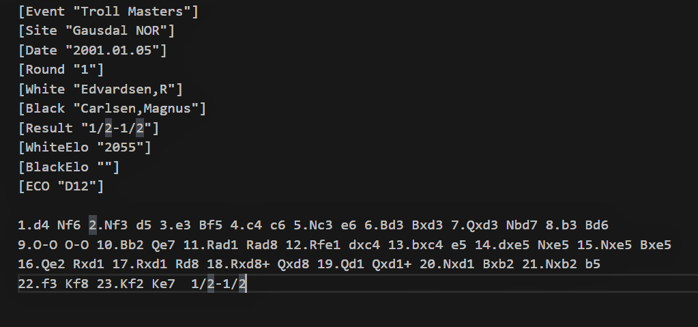

About pgn2chess¶
Pgn2Chess is a program, written in Python. It allows you to read chess moves from a pgn file and display the final position of the chess pieces in the chess-board. It accounts for pawn promotion, piece capture and castling.
Input:
The input is a PGN file of the following format.
Output:
The output of the program is of the following format.
CODE OVERVIEW
The main components of the code are as foloows:
setup()
This function is used to setup the initial chess board representation in the form of 2 dictionaries board_view and piece_view.
board_view and piece_view:
The whole code relies on 2 dictionaries board_view and piece_view in order to-
- Access the piece at a given position in chessboard.
- Access the positions of a given piece in the chessboard.
- Move the piece from one position to another by updating board_view and piece_view
Note
The initial values of these dictionaries reflect the initial board setup
preprocess_moves():
The function preprocess_moves extracts data from a pgn file in order to access the moves made in the game in the form of a list of tuples wherein the first element is the move made by the mhite piece and the second element is the move made by the black piece.
make_move():
The function make_move evaluates the moves made by the piece, i.e. checks for castling, ambiguity, check-mate etc and then makes the appropriate move.
change_position()
This function updates the board_view and the piece_view dictionaries after each move.